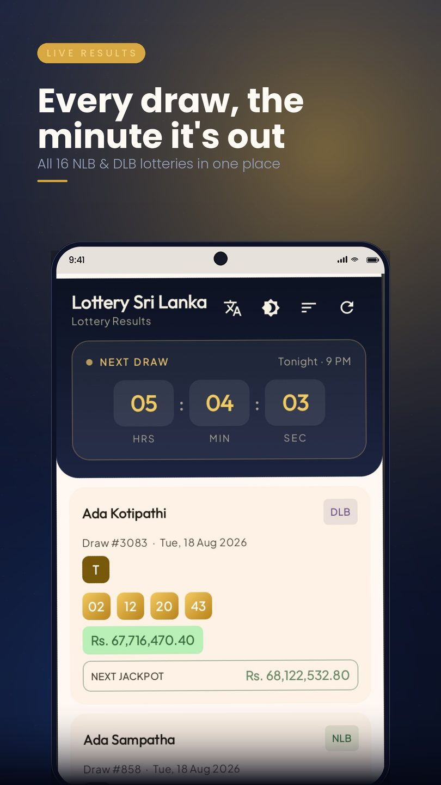
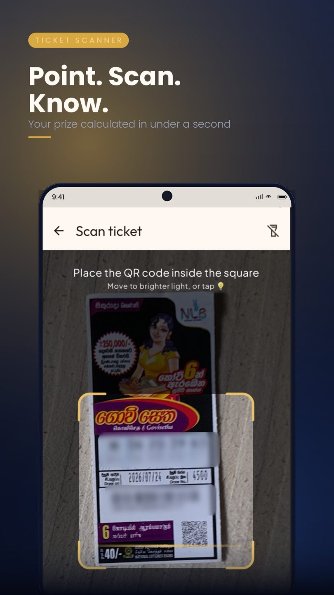
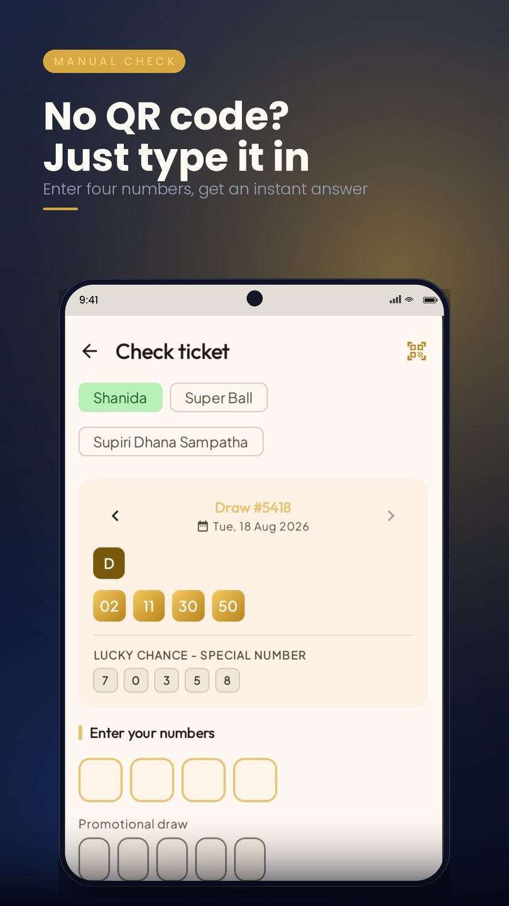
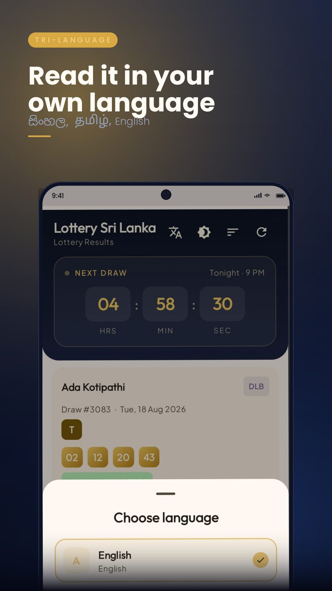
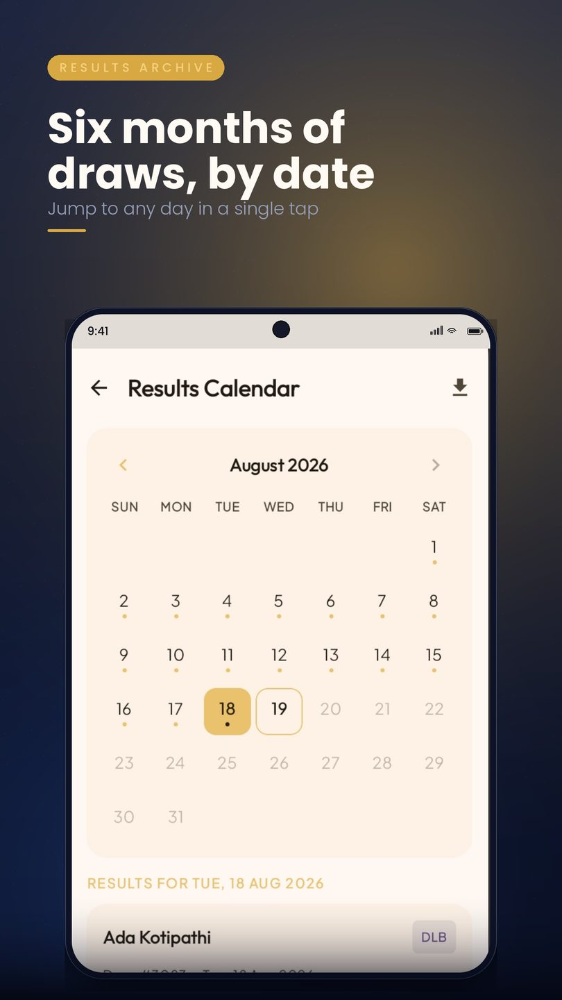
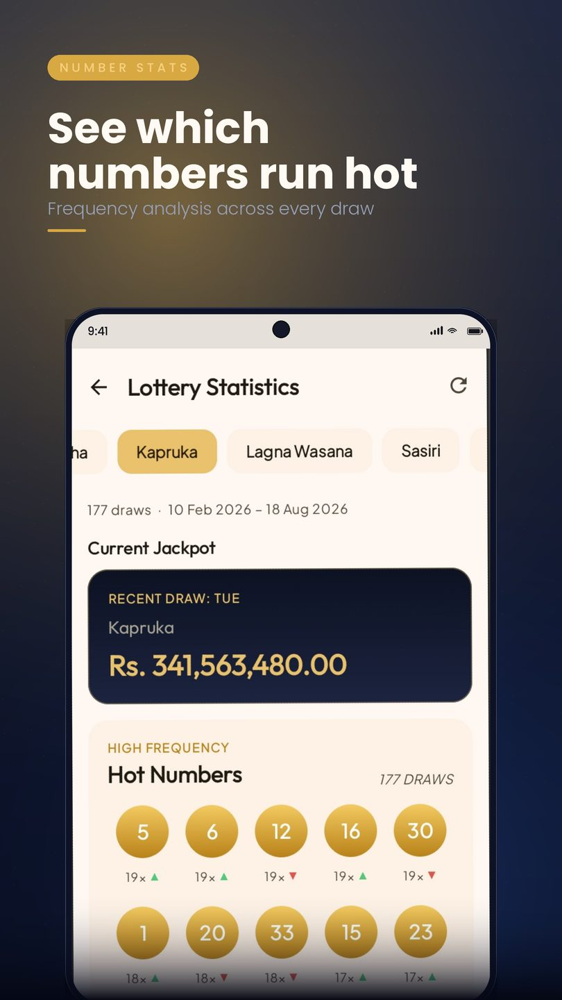

ZentiumDev · Case study · Android & backend · 2026
Lottery Sri Lanka checks tickets for all sixteen National Lotteries Board and Development Lotteries Board games. I built the Android app, the Kotlin API behind it, the admin panel that feeds it, and the server it runs on.
Stack
Sharing a language across the app and the API meant the prize rules, the result shapes and the parsing logic could be reasoned about the same way on both sides.
KotlinJetpack ComposeMaterial 3
CameraXML Kit Barcode ScanningRetrofit
OkHttpCoroutines / FlowDataStore
Baseline ProfileR8
KtorExposedPostgreSQL
HikariCPkotlinx.serializationLogback
Vue 3PiniaVue Router
AxiosTailwind CSSVite
DigitalOceanUbuntusystemd
nginxLet's EncryptFirebase Hosting
Firebase Cloud MessagingFirebase Analytics
Google AdMobPlay In-App Review
Play In-App Updates
Data path
Results are published by the boards on paper and on their own sites. Getting them onto a handset accurately is the whole job.
A draw's winning numbers, letter, zodiac and promotional draws are typed in against a per-lottery field definition, so each game renders the exact inputs it needs. Validation runs before anything is saved.
Each result is stored as JSONB against its lottery, which lets sixteen games with different shapes share one table. Prize tiers live in the lottery's own format definition, so adding a game is configuration rather than a release.
The app pulls results over Retrofit and caches them, so recent draws stay readable without a connection. A silent FCM push tells it when a new result is published rather than having it poll.
CameraX feeds frames to ML Kit, which decodes the ticket's QR. The numbers are compared against the stored result on the phone — a ticket never leaves the device — and the prize engine walks the tiers to produce a total.
Running it
No container orchestration for a service this size. The API is a fat JAR that systemd keeps alive, nginx terminates TLS in front of it, and a bash script does the build-and-swap.
# build a fat JAR locally, ship only the artifact ./gradlew shadowJar scp build/libs/lottery-api-all.jar $HOST:/opt/lottery-api/ # systemd owns the process: restarts on crash, starts on boot ssh $HOST 'sudo systemctl restart lottery-api' # fail loudly if the new build is not actually serving curl -fsS https://lottery-sri-lanka.duckdns.org/lotteries > /dev/null \ && echo "deploy ok" || echo "ROLLBACK"
Secrets stay in an environment file read by the unit, never in the repo. Prize-tier configuration is applied by a second script that PATCHes each lottery and verifies the response, so a malformed payload fails at the terminal rather than silently underpaying someone weeks later.
Problems worth solving
A Kapruka ticket can win the jackpot plus a motor car, a motorbike and a cash special — four independent raffles in one draw. The engine groups tiers, pays the best in each group, and sums across them, so the total matches the board's published payout instead of showing only the largest line.
Real tickets are folded, faded and photographed in poor light. Zoom suggestion, a region-of-interest gate, two-frame stability checks and autofocus recovery brought the failure rate down, with progressive on-screen hints when a scan keeps missing.
Both scripts need conjunct shaping and both run considerably longer than the English. Layouts size to fit rather than assuming Latin widths, and the entry boxes mirror the colours of the drawn rows so the mapping is visual rather than counted.
Each lottery has its own field shape — four numbers and a letter, six digits, a zodiac sign, two to five promotional draws. Driving all of it from a stored format definition means a new game or a changed prize structure is a config edit, not an app release.
Screens






Lottery Sri Lanka is an independent app. It is not affiliated with, endorsed by or operated by the National Lotteries Board or the Development Lotteries Board. Results shown in the app are unofficial — wins are verified with the boards at nlb.lk and dlb.lk.